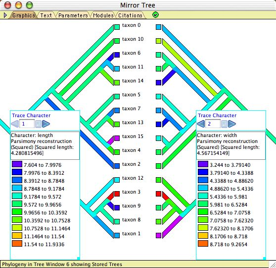
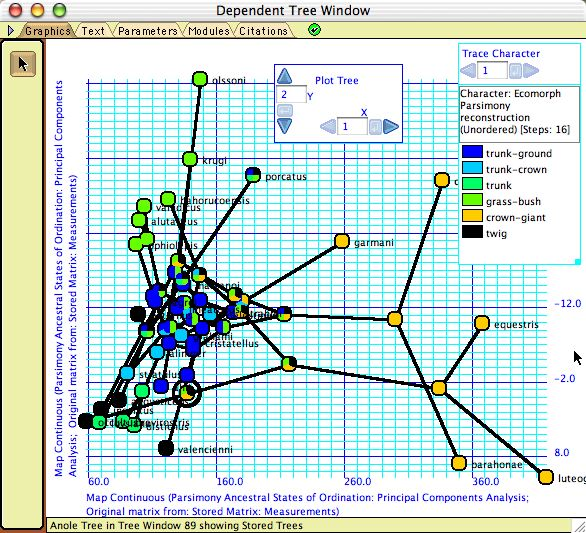
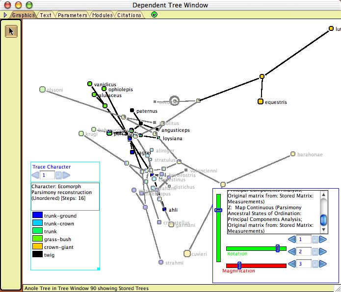
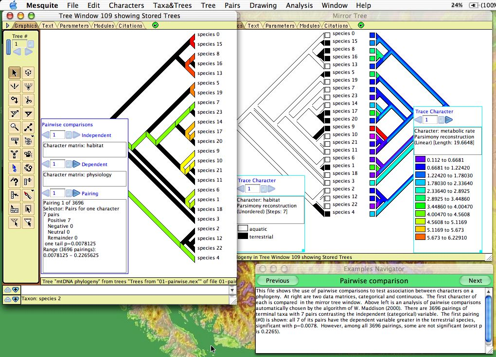
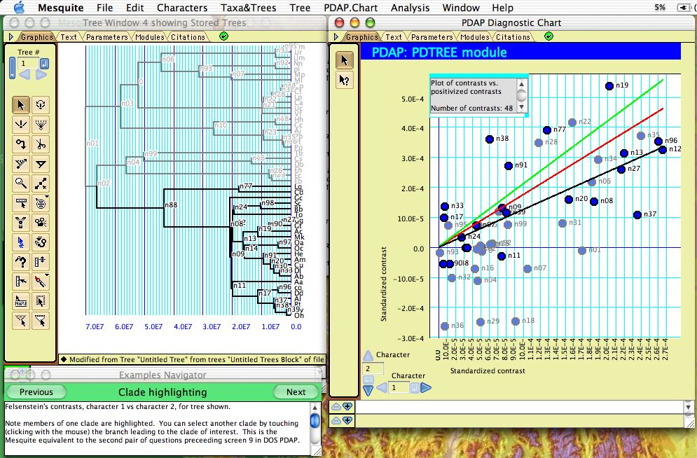

Processes of Character Evolution
Some characters evolve more quickly than others; some characters depend on others in their evolution. Discovering the nature of these evolutionary processes for a character from an analytical point of view involves determining a model and its parameters. For analyses that involved combined models of character change, speciation and extinction, see the page on Diversification.Contents
- Single characters
- Correlated characters
Estimating parameters
Maximum Likelihood estimates of rates and biases can be obtained for categorical characters for two simple models, the Mk1 model and the AsymmMk model. For more information on these models, see the page on ancestral state reconstruction. Mesquite cannot yet estimate parameters for models of DNA sequence evolution.Three modules provide calculations to estimate parameters for the Mk1 and AsymmMk models:
- Mk1 Estimated Rate— Estimates the rate of a character's evolution under the simple Mk1 model.
- Forward/Backward Rates — Uses maximum likelihood to estmate the rates of forward and backward changes (0 to 1 and 1 to 0 changes respectively), or alternatively the overall rate and the bias in gains versus losses, using the AsymmMk model on a tree for a given character.
- Asymmetry Likelihood Ratio Test — Calculates the test statistic for the likelihood ratio test comparing the asymmetrical and one parameter models [2ln(L(Asymm.)/L(Mk1)], on a tree for a given character.
These calculations consider a categorical character and a tree. As such, they can be considered to be values describing a character (and thus are available when analyzing characters, as for instance in a Characters Bar Chart or Scattergram or a List of Characters Window) or values describing a tree (and thus are available when analyzing trees, as for instance in a Trees Bar Chart or Scattergram or a List of Trees Window). To access them as values for characters, select them under "Character value with current tree" or "Character value with tree". To access them as values for trees, select them under "Tree value using character". Two example files illustrate parameter estimation, Mesquite_Folder/examples/Ancestral_States/15a-estimatingParameters.nex and Ancestral_States/15b-estimatingParameters.nex
You can explore the likelihood surface of the two parameters AsymmMk model using the (Tree Window)Analysis>Other Anayses>Likelihood Surface Asymm Mk menu item.
Correlations: Visualizations
To study correlations or associations among characters, there are both correlation calculators (see Pairwise comparisons, Felsenstein's contrasts, and Pagel's correlation method, below) and heuristic visualizations. The latter include:- Mirror Tree Window — When a Tree Window is open, you can request and alternative view of the same tree by selecting Tree>Mirror Tree Window. This shows the same tree as in the tree window, shown in duplicate tips-to-tips. The purpose of this is to allow you to display two different visualizations (one at left, one at right) and compare them. Character correlations can be explored by tracing evolution of two characters, as shown here.
Example files: Basic_Examples/tree_viewing/08-mirrorTree.nex; Ancestral_States/15-Mk1AsymmCompare.nex; Pairwise_Comparison/01-pairwise.nex.

- Plot Tree 2D — Plots the tree in a 2-dimensional space, available as a tree drawing form in the Display>Tree Form submenu. If the axes represent the state of the taxa in two continuous characters, then this allows one to map the tree into the character space, which may suggest patterns or correlations. The internal nodes of the tree can are placed at the reconstructed ancestral states. An example is shown here.
Example file: Multivariate_Continuous/07-anoles.nex

- Plot Tree 3D — Plots the tree in a 3-dimensional space, available as a tree drawing form in the Display>Tree Form submenu. This is part of the Rhetenor package. As with Plot Tree 2d, this allows one to map the tree into the character space. The tree can be rotated in space using the Rotation sliders in the legend. An example is shown here.
Example file: Multivariate_Continuous/08-anoles.nex

- Taxa Scattergram — Select Analysis>New Scattergram For>Taxa to obtain a bivariate plot for taxa. You will be asked whether to use the same or different calculations for the two axes. By "Different" is meant two entirely different calculations, such as the percentage of missing data in the taxon on one axis, and the state of a continuous variable on the other. Choose "Same" and then, if asked, indicate you want "Continuous state of taxon". You will therefore be plotting the taxa according to their states in one character versus another. If PDAP is installed, you will be able to do linear regression by selecting Scattegram>Analysis>, and choosing one of the Scattergram Diagnostics. Note: any correlation seen is aphylogenetic. Phylogenetic correlations can be studied by using the Felsenstein's contrasts calculations in PDAP.
Example files: Multivariate_Continuous/01-wingsPlot.nex and subsequent
Correlations: Pairwise comparisions
Character correlations can be tested using pairwise comparisons as described by Read & Nee (1995) and W. Maddison (2000). This is available under the Analysis:Tree menu of Tree Windows. The module chooses pairs of taxa, and indicates how the pairs compare in two characters: does the member of the pair with the higher value (say, state 1) in one character have higher or lower value in a second character? A summary over all pairs is given in the legend, as shown below. There are three options for choosing pairs:- Most pairs — choose pairs to maximize number of pairs, regardless of the states in the characters
- Pairs for one character — choose pairs of taxa that differ in the state of the first character (independent variable)
- Pairs for two characters — choose pairs of taxa that differ in the state of both characters

The graphical display shows the current pairing chosen; you can scroll through all pairings using the legend.
Example files: Pairwise_Comparison/01-pairwise.nex and subsequent
Felsenstein's Independent Contrasts
Correlations among continuous valued characters can be studied using the separately-available PDAP package (Midford et al., 2003), which (among other things) calculates Felsenstein's (1985) independent contrasts and displays them in a scatterplot:
The points in the plot are nodes in the tree, with the X and Y axes representing the independent contrast across the node in each of the two characters. Regression lines, confidence intervals and other statistics can be calculated by PDAP. When only some nodes in the tree are selected, they are highlighted in the plot as shown above.
The PDAP documentation or example files should be consulted for more details.
Pagel's Correlation Method
Pagel's (1994) Correlation test is available via the correl package (Midford & Maddison) distributed with Mesquite. It uses likelihood to test whether the evolution of two binary (0,1) characters is independent. To begin an analysis, choose Correlation Analysis from the Analysis:Tree menu of a tree window. If there is more than one option for method, choose Pagel 94 (if there is only one option, you won't be asked). You will be asked how intense to make the likelihood search (number of extra iterations), whether to present a p-value, and how many simulations to use to estimate the p-value. Options are explained in more detail on the page focusing on the analysis. A panel showing the analysis will appear in the tree window:
If the difference in likelihoods between the four (independent) and eight (correlated) models is high enough, then we can reject the null hypothesis of independence. A separate page of the manual describes the Pagel94 modules in more detail.
Use with Pagel's Discrete and Multistate
Mesquite can import and export files for use by the Discrete (Pagel, 2000) and Multistate (Pagel, 2002) programs. For import, attempt to read the Pagel format file in Mesquite, and choose the file format from the import dialog box. For export, select the Export... menu item from the File menu.References
Felsenstein, J. 1985. Phylogenies and the comparative method. American Naturalist, 125:1–15.Maddison, W.P. 2000. Testing character correlation using pairwise comparisons on a phylogeny. J. Theoretical Biology. 202: 195-204.
Midford, P. E., T. Garland Jr. & W. Maddison. 2002. PDAP:PDTREE package for Mesquite, version 1.00.
Pagel, M. 1994. Detecting correlated evolution on phylogenies: a general method for the comparative analysis of discrete characters. Proc. R. Soc. London B 255: 37-45.
Pagel, M. 2000. Discrete, version 4.0. A computer program distributed by the author.
Pagel, M. 2002. Multistate, version 0.6. A computer program distributed by the author.
Read, A. F. and S. Nee. 1995. Inference from binary comparative data. J. Theoretical Biology 173:99-108